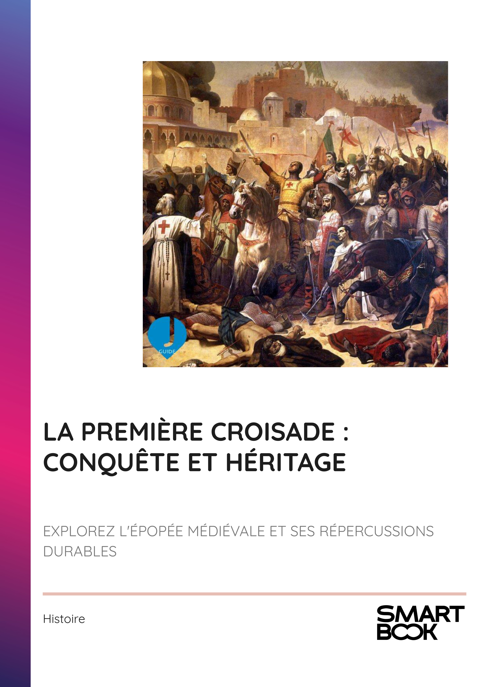

- INTRODUCTION - UN VOYAGE AU CŒUR DE LA PREMIÈRE CROISADE
- Chapitre 1 - CONTEXTE HISTORIQUE ET RELIGIEUX DE LA FIN DU XIE SIÈCLE
- Chapitre 2 - L'APPEL À LA CROISADE : URBAIN II ET LE CONCILE DE CLERMONT
- Chapitre 3 - LE PARCOURS DES CROISÉS : RASSEMBLEMENT ET VOYAGE VERS L'ORIENT
- Chapitre 4 - LES BATAILLES DÉCISIVES : SIÈGE D'ANTIOCHE ET PRISE DE JÉRUSALEM
- Chapitre 5 - FIGURES EMBLÉMATIQUES : GODEFROY DE BOUILLON ET SES CONTEMPORAINS
- Chapitre 6 - CONSÉQUENCES RELIGIEUSES : TENSIONS ENTRE CHRÉTIENS ET MUSULMANS
- Chapitre 7 - CONSÉQUENCES POLITIQUES : NAISSANCE DES ÉTATS LATINS D'ORIENT
- Chapitre 8 - HÉRITAGE DE LA PREMIÈRE CROISADE : IMPACT SUR L'IDENTITÉ CHRÉTIENNE
- CONCLUSION - L'HÉRITAGE DURABLE DE LA PREMIÈRE CROISADE
📄 Consulter les annexes du livre
Mentions légales